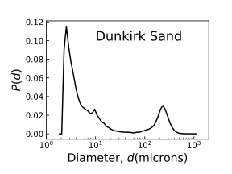
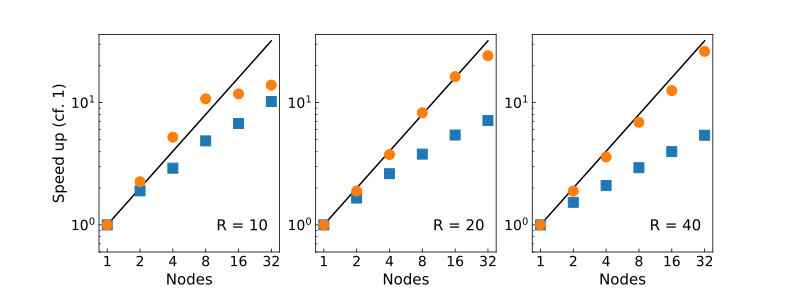

Overview
- Existing implementation
- Bins, Stencils, Pairs
- Multi-level implementation
- Bins, Stencils, Pairs, ...
- Communication
- Results
- Polydisperse
- Bidisperse
- Communication
- Summary / observations
LAMMPS neighbour bins
Start with cell list! [Alder and Wainwright (1959)]

Implementation: NBinStandard extends NBin
"neighbor 0.5 bin"
"neighbor 0.5 nsq"
LAMMPS neighbour stencils (1)
Small and larger particle [t'Veld et al.(2008)]

Implementation: various stencils extend NStencil
"neighbor 0.5 multi"
"newton off"
LAMMPS neighbour pair lists
[Verlet (1967)]
Implementation: various classes extend NPair
- For each particle, maintain list a of neighbours
- List is searched to compute actual interactions
Final /bin/stencil/pair selection is reported...
"(1) pair gran/hooke/history/multi, perpetual
attributes: half, newton on, size, history
pair build: half/size/bin/newton
stencil: half/bin/3d/newton
bin: standard"
LAMMPS stencils again
Problem

Large separation of scales not handled well by stencil
Multi-level implementation
Bin different size particles in different size cell lists!

Particles identified by standard type attribute
Implementation: NBinByType extends NBin
"neighbor 0.5 bytype"
Multi-level implementation: Stencils
Heirarchy favours compact stencils:
- Small-small neighbours located in small cell list
- Large-large neighbours located in large cell list
What about cross-type interactions?

Implementation: new stencils extend NStencil
Communication
Domain decomposition plus message passing
- Multi approach: different sizes have different cut offs
- Small is $r_{sl}$; large is $r_{ll}$
- New approach:
- Small is $r_{ss}$; large still $r_{ll}$
- ("Newton" only)
Polydisperse result
Model system based on sand
- Real distribution scaled to set $d_{max}/d_{min}$
- We use two types (two levels small/large)
- How do we split the size distribution into two types?
Bidisperse result
Exactly two sizes
- $R = 1$ and $R = R$ for $R = 10, 20, 40, 80, 100$
Communication / scaling
Summary / observations
- Existing multi approach extended to multi-level picture
- Effective for polydisperse systems
- Good for bidisperse systems to 100:1
- More robust communication?
- Decouple from type system?
Acknowledgements
Ishan Srivastava of Sandia for making available some extra LAMMPS granular classes.